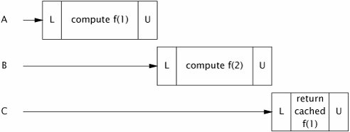
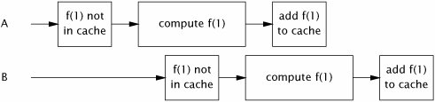
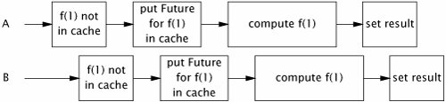

{% include JB/setup %}
{% raw %}
<div>


<a name="ch05lev1sec6" class="calibre18" id="ch05lev1sec6"></a>
<h3 id="title-IDAAKN5K" class="docSection1Title">5.6. Building an Efficient, Scalable Result Cache</h3>
<p class="docText1">Nearly every server application uses some form of caching. Reusing the results of a previous computation can reduce latency and increase throughput, at the cost <a name="iddle1742" class="calibre18" id="iddle1742"></a><a name="iddle2097" class="calibre18" id="iddle2097"></a><a name="iddle1459" class="calibre18" id="iddle1459"></a><a name="iddle1734" class="calibre18" id="iddle1734"></a><a name="iddle1735" class="calibre18" id="iddle1735"></a><a name="iddle2098" class="calibre18" id="iddle2098"></a><a name="iddle2113" class="calibre18" id="iddle2113"></a><a name="iddle2135" class="calibre18" id="iddle2135"></a><a name="iddle3192" class="calibre18" id="iddle3192"></a><a name="iddle3489" class="calibre18" id="iddle3489"></a><a name="iddle4541" class="calibre18" id="iddle4541"></a>of some additional memory usage.</p>
<a name="ch05list15" class="calibre18" id="ch05list15"></a><h5 id="title-IDAPON5K" class="docExampleTitle">Listing 5.15. Coordinating Computation in a Cellular Automaton with <tt class="calibre33">CyclicBarrier</tt>.</h5><p class="calibre21"><table cellspacing="0" width="90%" border="1" cellpadding="5" class="calibre5"><tr class="calibre6"><td class="calibre28">
<pre class="calibre30">public class CellularAutomata {
    private final Board mainBoard;
    private final CyclicBarrier barrier;
    private final Worker[] workers;

    public CellularAutomata(Board board) {
        this.mainBoard = board;
        int count = Runtime.getRuntime().availableProcessors();
        this.barrier = new CyclicBarrier(count,
                new Runnable() {
                    public void run() {
                        mainBoard.commitNewValues();
                    }});
        this.workers = new Worker[count];
        for (int i = 0; i &lt; count; i++)
            workers[i] = new Worker(mainBoard.getSubBoard(count, i));
    }

    private class Worker implements Runnable {
        private final Board board;

        public Worker(Board board) { this.board = board; }
        public void run() {
            while (!board.hasConverged()) {
                for (int x = 0; x &lt; board.getMaxX(); x++)
                    for (int y = 0; y &lt; board.getMaxY(); y++)
                        board.setNewValue(x, y, computeValue(x, y));
                try {
                    barrier.await();
                } catch (InterruptedException ex) {
                    return;
                } catch (BrokenBarrierException ex) {
                    return;
                }
            }
        }
    }

    public void start() {
        for (int i = 0; i &lt; workers.length; i++)
            new Thread(workers[i]).start();
        mainBoard.waitForConvergence();}
    }
}
</pre><br class="calibre11"/>
</td></tr></table></p>
<p class="docText1">Like many other frequently reinvented wheels, caching often looks simpler than it is. A naive cache implementation is likely to turn a performance bottleneck into a scalability bottleneck, even if it does improve single-threaded performance. In this section we develop an efficient and scalable result cache for a computationally expensive function. Let's start with the obvious approacha simple <tt class="calibre25">HashMap</tt>and then look at some of its concurrency disadvantages and how to fix them.</p>
<p class="docText1">The <tt class="calibre25">Computable&lt;A,V&gt;</tt> interface in <a class="calibre2" href="#ch05list16">Listing 5.16</a> describes a function with input of type <span class="docEmphasis">A</span> and result of type <span class="docEmphasis">V</span>. <tt class="calibre25">ExpensiveFunction</tt>, which implements <tt class="calibre25">Computable</tt>, takes a long time to compute its result; we'd like to create a <tt class="calibre25">Computable</tt> wrapper that remembers the results of previous computations and encapsulates the caching process. (This technique is known as <span class="docEmphasis">memoization</span>.)</p>
<a name="ch05list16" class="calibre18" id="ch05list16"></a><h5 id="title-IDA4PN5K" class="docExampleTitle">Listing 5.16. Initial Cache Attempt Using <tt class="calibre33">HashMap</tt> and Synchronization.</h5><p class="calibre21"><table cellspacing="0" width="90%" border="1" cellpadding="5" class="calibre5"><tr class="calibre6"><td class="calibre28">

<pre class="calibre30">public interface Computable&lt;A, V&gt; {
    V compute(A arg) throws InterruptedException;
}

public class ExpensiveFunction
        implements Computable&lt;String, BigInteger&gt; {
    public BigInteger compute(String arg) {
        <span class="docEmphasis">// after deep thought...</span>
        return new BigInteger(arg);
    }
}

public class Memoizer1&lt;A, V&gt; implements Computable&lt;A, V&gt; {
    @GuardedBy("this")
    private final Map&lt;A, V&gt; cache = new HashMap&lt;A, V&gt;();
    private final Computable&lt;A, V&gt; c;

    public Memoizer1(Computable&lt;A, V&gt; c) {
        this.c = c;
    }

    public <span class="docEmphStrong">synchronized</span> V compute(A arg) throws InterruptedException {
        V result = cache.get(arg);
        if (result == null) {
            result = c.compute(arg);
            cache.put(arg, result);
        }
        return result;
    }
}
</pre><br class="calibre11"/>
</td></tr></table></p>
<p class="docText1"><a name="iddle1051" class="calibre18" id="iddle1051"></a><a name="iddle1285" class="calibre18" id="iddle1285"></a><a name="iddle2137" class="calibre18" id="iddle2137"></a><a name="iddle3866" class="calibre18" id="iddle3866"></a><a name="iddle4032" class="calibre18" id="iddle4032"></a><tt class="calibre25">Memoizer1</tt> in <a class="calibre2" href="#ch05list16">Listing 5.16</a> shows a first attempt: using a <tt class="calibre25">HashMap</tt> to store the results of previous computations. The <tt class="calibre25">compute</tt> method first checks whether the desired result is already cached, and returns the precomputed value if it is. Otherwise, the result is computed and cached in the <tt class="calibre25">HashMap</tt> before returning.</p>
<p class="docText1"><tt class="calibre25">HashMap</tt> is not thread-safe, so to ensure that two threads do not access the <tt class="calibre25">HashMap</tt> at the same time, <tt class="calibre25">Memoizer1</tt> takes the conservative approach of synchronizing the entire <tt class="calibre25">compute</tt> method. This ensures thread safety but has an obvious scalability problem: only one thread at a time can execute <tt class="calibre25">compute</tt> at all. If another thread is busy computing a result, other threads calling <tt class="calibre25">compute</tt> may be blocked for a long time. If multiple threads are queued up waiting to compute values not already computed, <tt class="calibre25">compute</tt> may actually take longer than it would have without memoization. <a class="calibre2" href="#ch05fig02">Figure 5.2</a> illustrates what could happen when several threads attempt to use a function memoized with this approach. This is not the sort of performance improvement we had hoped to achieve through caching.</p>
<a name="ch05fig02" class="calibre18" id="ch05fig02"></a><p class="calibre21"><div class="calibre12">
<h5 class="docExampleTitle">Figure 5.2. Poor Concurrency of <tt class="calibre33">Memoizer1</tt>.</h5>
</div></p><p class="docText1">
</p>
<p class="calibre1"> </p>
<p class="docText1"><tt class="calibre25">Memoizer2</tt> in <a class="calibre2" href="#ch05list17">Listing 5.17</a> improves on the awful concurrent behavior of <tt class="calibre25">Memoizer1</tt> by replacing the <tt class="calibre25">HashMap</tt> with a <tt class="calibre25">ConcurrentHashMap</tt>. Since <tt class="calibre25">ConcurrentHashMap</tt> is thread-safe, there is no need to synchronize when accessing the backing <tt class="calibre25">Map</tt>, thus eliminating the serialization induced by synchronizing <tt class="calibre25">compute</tt> in <tt class="calibre25">Memoizer1</tt>.</p>
<p class="docText1"><tt class="calibre25">Memoizer2</tt> certainly has better concurrent behavior than <tt class="calibre25">Memoizer1</tt>: multiple threads can actually use it concurrently. But it still has some defects as a cachethere is a window of vulnerability in which two threads calling <tt class="calibre25">compute</tt> at the same time could end up computing the same value. In the case of memoization, this is merely inefficientthe purpose of a cache is to prevent the same data from being calculated multiple times. For a more general-purpose caching mechanism, it is far worse; for an object cache that is supposed to provide once-and-only-once initialization, this vulnerability would also pose a safety risk.</p>
<p class="docText1">The problem with <tt class="calibre25">Memoizer2</tt> is that if one thread starts an expensive computation, other threads are not aware that the computation is in progress and so may start the same computation, as illustrated in <a class="calibre2" href="#ch05fig03">Figure 5.3</a>. We'd like to somehow represent the notion that "thread <span class="docEmphasis">X</span> is currently computing <span class="docEmphasis">f</span> (27)", so that if another thread arrives looking for <span class="docEmphasis">f</span> (27), it knows that the most efficient way to find it is to head over to Thread <span class="docEmphasis">X</span>'s house, hang out there until <span class="docEmphasis">X</span> is finished, and <a name="iddle2435" class="calibre18" id="iddle2435"></a>then ask "Hey, what did you get for <span class="docEmphasis">f</span> (27)?"</p>
<a name="ch05fig03" class="calibre18" id="ch05fig03"></a><p class="calibre21"><div class="calibre12">
<h5 class="docExampleTitle">Figure 5.3. Two Threads Computing the Same Value When Using <tt class="calibre33">Memoizer2</tt>.</h5>
</div></p><p class="docText1">
</p>
<p class="calibre1"> </p>
<a name="ch05list17" class="calibre18" id="ch05list17"></a><h5 id="title-IDAXXN5K" class="docExampleTitle">Listing 5.17. Replacing <tt class="calibre33">HashMap</tt> with <tt class="calibre33">ConcurrentHashMap</tt>.</h5><p class="calibre21"><table cellspacing="0" width="90%" border="1" cellpadding="5" class="calibre5"><tr class="calibre6"><td class="calibre28">

<pre class="calibre30">public class Memoizer2&lt;A, V&gt; implements Computable&lt;A, V&gt; {
    private final Map&lt;A, V&gt; cache = <span class="docEmphStrong">new ConcurrentHashMap&lt;A, V&gt;();</span>
    private final Computable&lt;A, V&gt; c;

    public Memoizer2(Computable&lt;A, V&gt; c) { this.c = c; }

    public V compute(A arg) throws InterruptedException {
        V result = cache.get(arg);
        if (result == null) {
            result = c.compute(arg);
            cache.put(arg, result);
        }
        return result;
    }
}
</pre><br class="calibre11"/>
</td></tr></table></p>
<p class="docText1">We've already seen a class that does almost exactly this: <tt class="calibre25">FutureTask</tt>. <tt class="calibre25">FutureTask</tt> represents a computational process that may or may not already have completed. <tt class="calibre25">FutureTask.get</tt> returns the result of the computation immediately if it is available; otherwise it blocks until the result has been computed and then returns it.</p>
<p class="docText1"><tt class="calibre25">Memoizer3</tt> in <a class="calibre2" href="#ch05list18">Listing 5.18</a> redefines the backing <tt class="calibre25">Map</tt> for the value cache as a <tt class="calibre25">ConcurrentHashMap&lt;A,Future&lt;V&gt;&gt;</tt> instead of a <tt class="calibre25">ConcurrentHashMap&lt;A,V&gt;</tt>. <tt class="calibre25">Memoizer3</tt> first checks to see if the appropriate calculation has been started (as opposed to finished, as in <tt class="calibre25">Memoizer2</tt>). If not, it creates a <tt class="calibre25">FutureTask</tt>, registers it in the <tt class="calibre25">Map</tt>, and starts the computation; otherwise it waits for the result of the existing computation. The result might be available immediately or might be in the process of being computedbut this is transparent to the caller of <tt class="calibre25">Future.get</tt>.</p>
<p class="docText1">The <tt class="calibre25">Memoizer3</tt> implementation is almost perfect: it exhibits very good concurrency (mostly derived from the excellent concurrency of <tt class="calibre25">ConcurrentHashMap</tt>), the result is returned efficiently if it is already known, and if the computation is in progress by another thread, newly arriving threads wait patiently for the result. It has only one defectthere is still a small window of vulnerability in which <a name="iddle1159" class="calibre18" id="iddle1159"></a><a name="iddle1283" class="calibre18" id="iddle1283"></a><a name="iddle1284" class="calibre18" id="iddle1284"></a><a name="iddle1424" class="calibre18" id="iddle1424"></a><a name="iddle2138" class="calibre18" id="iddle2138"></a>two threads might compute the same value. This window is far smaller than in <tt class="calibre25">Memoizer2</tt>, but because the <tt class="calibre25">if</tt> block in <tt class="calibre25">compute</tt> is still a nonatomic check-thenact sequence, it is possible for two threads to call <tt class="calibre25">compute</tt> with the same value at roughly the same time, both see that the cache does not contain the desired value, and both start the computation. This unlucky timing is illustrated in <a class="calibre2" href="#ch05fig04">Figure 5.4</a>.</p>
<a name="ch05fig04" class="calibre18" id="ch05fig04"></a><p class="calibre21"><div class="calibre12">
<h5 class="docExampleTitle">Figure 5.4. Unlucky Timing that could Cause <tt class="calibre33">Memoizer3</tt> to Calculate the Same Value Twice.</h5>
</div></p><p class="docText1">
</p>
<p class="calibre1"> </p>
<a name="ch05list18" class="calibre18" id="ch05list18"></a><h5 id="title-IDAI3N5K" class="docExampleTitle">Listing 5.18. Memoizing Wrapper Using <tt class="calibre33">FutureTask</tt>.</h5><p class="calibre21"><table cellspacing="0" width="90%" border="1" cellpadding="5" class="calibre5"><tr class="calibre6"><td class="calibre28">

<pre class="calibre30">public class Memoizer3&lt;A, V&gt; implements Computable&lt;A, V&gt; {
    private final Map&lt;A, Future&lt;V&gt;&gt; cache
            = <span class="docEmphStrong">new ConcurrentHashMap&lt;A, Future&lt;V&gt;&gt;();</span>
    private final Computable&lt;A, V&gt; c;

    public Memoizer3(Computable&lt;A, V&gt; c) { this.c = c; }

    public V compute(final A arg) throws InterruptedException {
        Future&lt;V&gt; f = cache.get(arg);
        if (f == null) {
            Callable&lt;V&gt; eval = new Callable&lt;V&gt;() {
                public V call() throws InterruptedException {
                    return c.compute(arg);
                }
            };
            FutureTask&lt;V&gt; ft = new FutureTask&lt;V&gt;(eval);
            f = ft;
            cache.put(arg, ft);
            <span class="docEmphStrong">ft.run();</span> <span class="docEmphasis">// call to c.compute happens here</span>
        }
        try {
            return <span class="docEmphStrong">f.get();</span>
        } catch (ExecutionException e) {
            throw launderThrowable(e.getCause());
        }
    }
}
</pre><br class="calibre11"/>
</td></tr></table></p>
<p class="docText1"><tt class="calibre25">Memoizer3</tt> is vulnerable to this problem because a compound action (put-if-absent) is performed on the backing map that cannot be made atomic using locking. <tt class="calibre25">Memoizer</tt> in <a class="calibre2" href="#ch05list19">Listing 5.19</a> takes advantage of the atomic <tt class="calibre25">putIfAbsent</tt> method of <tt class="calibre25">ConcurrentMap</tt>, closing the window of vulnerability in <tt class="calibre25">Memoizer3</tt>.</p>
<p class="docText1">Caching a <tt class="calibre25">Future</tt> instead of a value creates the possibility of <span class="docEmphasis">cache pollution</span>: if a computation is cancelled or fails, future attempts to compute the result will also indicate cancellation or failure. To avoid this, <tt class="calibre25">Memoizer</tt> removes the <tt class="calibre25">Future</tt> from the cache if it detects that the computation was cancelled; it might also be desirable to remove the <tt class="calibre25">Future</tt> upon detecting a <tt class="calibre25">RuntimeException</tt> if the computation might succeed on a future attempt. <tt class="calibre25">Memoizer</tt> also does not address cache expiration, but this could be accomplished by using a subclass of <tt class="calibre25">FutureTask</tt> that associates an expiration time with each result and periodically scanning the cache for expired entries. (Similarly, it does not address cache eviction, where old entries are removed to make room for new ones so that the cache does not consume too much memory.)</p>
<p class="docText1">With our concurrent cache implementation complete, we can now add real caching to the factorizing servlet from <a class="calibre2" href="ch02_split_000.html#ch02">Chapter 2</a>, as promised. <tt class="calibre25">Factorizer</tt> in <a class="calibre2" href="#ch05list20">Listing 5.20</a> uses <tt class="calibre25">Memoizer</tt> to cache previously computed values efficiently and scalably.</p>
<p class="docText1"></p><a name="ch05list19" class="calibre18" id="ch05list19"></a><h5 id="title-IDATAO5K" class="docExampleTitle">Listing 5.19. <a name="iddle2136" class="calibre18" id="iddle2136"></a><a name="iddle2437" class="calibre18" id="iddle2437"></a>Final Implementation of <tt class="calibre33">Memoizer</tt>.</h5><p class="calibre21"><table cellspacing="0" width="90%" border="1" cellpadding="5" class="calibre5"><tr class="calibre6"><td class="calibre28">
<pre class="calibre30">public class Memoizer&lt;A, V&gt; implements Computable&lt;A, V&gt; {
    private final ConcurrentMap&lt;A, Future&lt;V&gt;&gt; cache
        = new ConcurrentHashMap&lt;A, Future&lt;V&gt;&gt;();
    private final Computable&lt;A, V&gt; c;

    public Memoizer(Computable&lt;A, V&gt; c) { this.c = c; }

    public V compute(final A arg) throws InterruptedException {
        while (true) {
            Future&lt;V&gt; f = cache.get(arg);
            if (f == null) {
                Callable&lt;V&gt; eval = new Callable&lt;V&gt;() {
                    public V call() throws InterruptedException {
                        return c.compute(arg);
                    }
                };
                FutureTask&lt;V&gt; ft = new FutureTask&lt;V&gt;(eval);
                f = cache.<span class="docEmphStrong">putIfAbsent(arg, ft);</span>
                if (f == null) { f = ft; ft.run(); }
            }
            try {
                return f.get();
            } catch (CancellationException e) {
                cache.remove(arg, f);
            } catch (ExecutionException e) {
                throw launderThrowable(e.getCause());
            }
        }
    }
}
</pre><br class="calibre11"/>
</td></tr></table></p>
<p class="docText1"></p><a name="ch05list20" class="calibre18" id="ch05list20"></a><h5 id="title-IDABCO5K" class="docExampleTitle">Listing 5.20. <a name="iddle2114" class="calibre18" id="iddle2114"></a>Factorizing Servlet that Caches Results Using <tt class="calibre33">Memoizer</tt>.</h5><p class="calibre21"><table cellspacing="0" width="90%" border="1" cellpadding="5" class="calibre5"><tr class="calibre6"><td class="calibre28">
<pre class="calibre30">@ThreadSafe
public class Factorizer implements Servlet {
    private final Computable&lt;BigInteger, BigInteger[]&gt; c =
        new Computable&lt;BigInteger, BigInteger[]&gt;() {
            public BigInteger[] compute(BigInteger arg) {
                return factor(arg);
            }
        };
    private final Computable&lt;BigInteger, BigInteger[]&gt; cache
        = new Memoizer&lt;BigInteger, BigInteger[]&gt;(c);

    public void service(ServletRequest req,
                        ServletResponse resp) {
        try {
            BigInteger i = extractFromRequest(req);
            encodeIntoResponse(resp, cache.compute(i));
        } catch (InterruptedException e) {
            encodeError(resp, "factorization interrupted");
        }
    }
}
</pre><br class="calibre11"/>
</td></tr></table></p>

<p class="calibre1"> </p>

</div>

{% endraw %}

